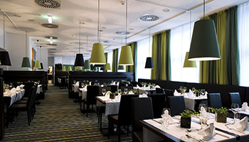

Welcome to JK Restaurant
The JK Restaurant ranks first in our list of the best restaurant websites. It uses a minimal web design with abundant use of a whitespace background alongside colorful and stylish typography.This restaurant website features a unique full-screen design that supports the creative display of text and illustrations for easy content digestion. This effect provides your restaurant website with a modern feeling, allowing you to showcase your beautiful food images and videos.

Restaurant Interior

Non AC Hall
A cozy and inviting restaurant hall with natural ventilation, perfect for those seeking a non-air conditioned dining experience. Enjoy the ambiance and fresh air while savoring our delicious cuisine.

Central AC Hall
Experience the epitome of comfort in our air-conditioned restaurant hall. Indulge in our delectable cuisine while enjoying a cool and refreshing atmosphere.